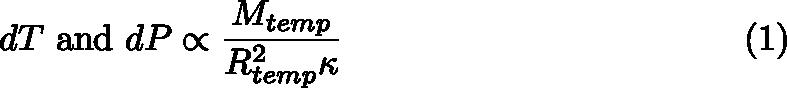
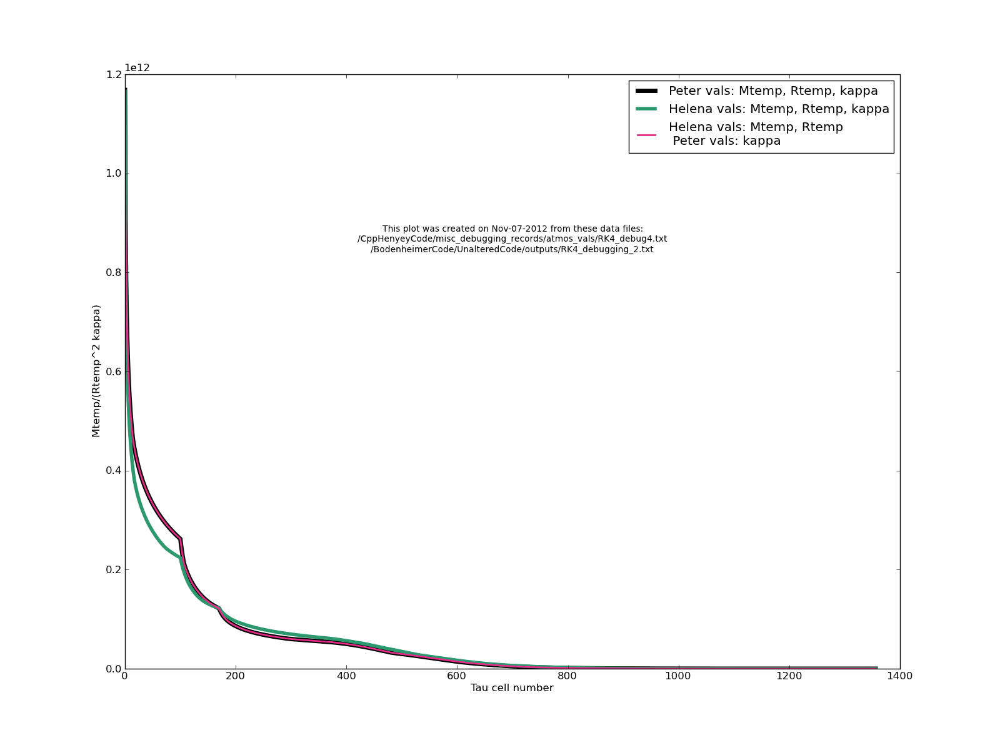

Date & Time: Nov. 7, 2012
Location: Campus
Computing context: /Desktop/Research/CppHenyeyCode, /Desktop/Research/BodenheimerCode/UnalteredCode/
Continuing from last time:
I checked on the RK4 stepsize effect, and it looks like taking tau stepsizes that are half the size that Helena normally uses does produce atmos profiles that differ noticeably from the ones that use 'regular' stepsizes. That is another good indication that my atmospheric RK4 method is subtly flawed somewhere. Now that I'm convinced of that, time to start comparing the Mk1, Mk2, etc. values b/w the two codes.
It looks like the dMk1 and/or dRk1 values are the ones that differ the most b/w the two codes (the T and P intermediate RK4 values do disagree as well, but not as much, percentage-wise). So, start by going through Helena's dMk1 and dRk1 calculations very carefully to try to locate errors in those.
The dPk values are too large. This causes the dTk values to be too small. It also gives Pmax and Tmax values (at bottom of the atmos) that are too large and small, respectively. Mtemp being too large could be one thing that's causing all of this. So, need to get the Mtemp (aka Zat) values out of Peter's code at each k-step w/in the atmos, and compare it to the Mtemp values being generated w/in Helena.
To Do:
Start with this:
"Get the Mtemp (aka Zat) values out of Peter's code at each k-step w/in the atmos, and compare it to the Mtemp values being generated w/in Helena."
The Mtemp1 values / profiles disagree slightly but interestingly before J = ~ 480. I think this is where tau first gets above 10. Helena's Mtemp1 is too small below J~ 400 and then kind of sawtoothes around the Peter Mtemp1 value after that.
Note: even at J= 0 the two Mtemp1 values do not agree. I don't know if that's an artifact of different writing (or reading) precision levels b/w the two codes, or whether it's a sign of a genuine difference in their computational results.
Let's check whether the kappa values are the only things driving this difference...
First, just plug Peter's kappa values into the calculation (see Eqn. 1) with Helena's Mtemp and Rtemp values in python. Then, do it w/in Helena's atmos code.


A comparison of the
values calculated from Eqn. 1 with the inputs noted in the legend.
These profiles were calculated purely in python from the Peter and
Helena atmos subroutine outputs (Mtemp, Rtemp, kappa).
Figure
1:
In Figure 1, using the profile calculated from Peter's Mtemp, Rtemp, and kappa values overlaps (perfectly?) with the one calculated from Helena's Mtemp and Rtemps and Peter's kappas. This suggests that Helena's kappa values may be driving the differences b/w the profiles that the two codes calculate.
Next step in testing this is to read Peter's kappa values into my code, and force Helena to use them (and not the ones it generates itself from its own look-up table procedure) to do its atmos calculations, and then see whether it produces the same P/T/M/R profiles that Peter's code does.
1) In python, read out the Peter kappa[1-4] values to a separate text file.
2) Read those value in w/in Helena's atmos code.
3) Change Helena's atmos code to use those read-in kappa values, rather than the ones it generates itself.
4) Get Helena to write out the j/P/T/M/R/tau/dTau values that modified run generates to a text file.
5) Plot the results in that file, and compare them to the atmos profiles produced by Peter's code.
Forcing Helena to use Peter's verbatim atmos kappa values does not solve the problem. It doesn't even improve agreement b/w the profiles.
What's going ON? If I force the two codes to use exactly the same tau and dTau values, what happens again? Under those circumstances, they *should* be produce the same P/T/M/R profiles.
I can tell just from examining the outputs from Helena, when I run it this way, that this does NOT fix the problem.
Since it's not (just) a tau/dTau issue, go through at each k-step and force that step (only) to use the Peter-values from that step, and see if that corrects anything. If that worked, that would mean that I have a typo or an error of some kind on one of my k-steps. If not, then I guess(?) it would mean that the error is in the look-up table/interpolation of the kappa/nab/rho/etc. secondary variables.
Before leaving tonight: read up on the Metzger 2012 paper on planet-star merger signatures. And, check my email to find out which meeting slot X. has me scheduled for with him tomorrow.